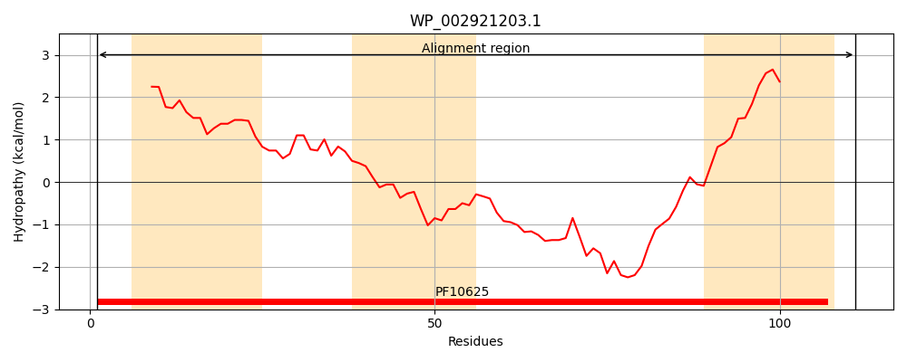
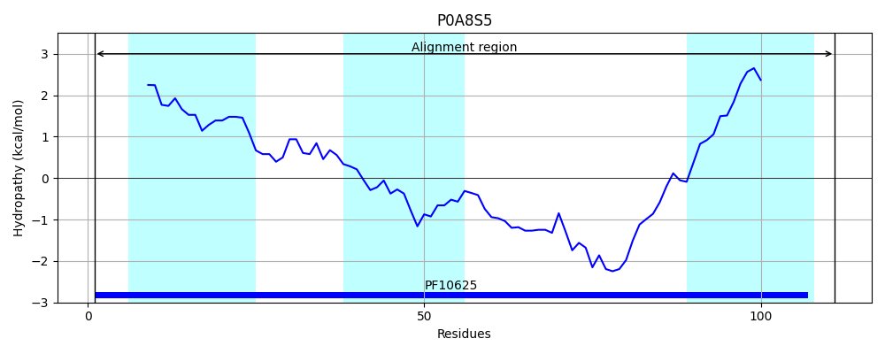
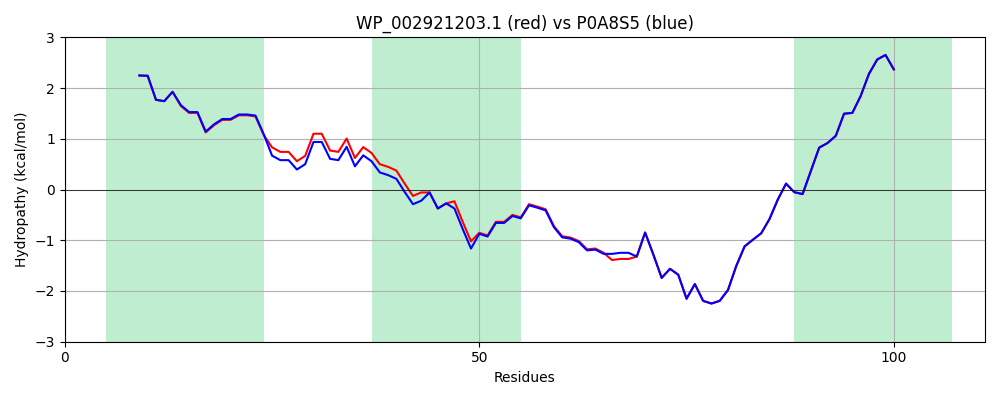

Hit Accession: P0A8S5
Hit TCID: 9.B.4.1.1
Hit Description: gnl|BL_ORD_ID|8619 gnl|TC-DB|P0A8S5|9.B.4.1.1 Universal stress protein B - Escherichia coli.
Mach Len: 111
e:0.000000
Query TMS Count : 3
Hit TMS Count: 3
TMS-Overlap Score: 2.950000
Predicted Substrates:None
BLAST Alignment:
| Protein Hydropathy Plots: | |
|---|---|
|  |  |
Pairwise Alignment-Hydropathy Plot: | |
|  | |